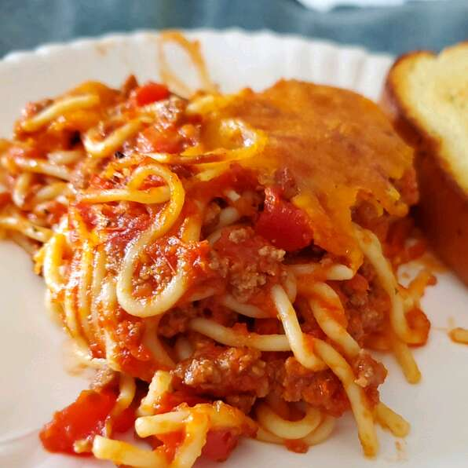

Basic Baked Spaghetti

Description
Quick and easy oven spaghetti. Use different cheeses to create your signature dish.
By Wendy
Ingredients
- ¾ pound lean ground beef
- 1 (16 ounce) jar spaghetti sauce
- 1 pound spaghetti
- 1 cup shredded mild Cheddar cheese
Steps
- Preheat oven to 350 degrees F (175 degrees C). In large skillet, cook hamburger until brown. Mix spaghetti sauce into skillet. Reduce heat and simmer.
- Meanwhile, bring a large pot of lightly salted water to a boil. Mix in pasta and cook for 8 to 10 minutes or until al dente; drain.
- Mix together spaghetti and meat mixture, pour into 9x13 pan. Top with cheese and bake for 30 minutes, or until heated through and cheese is bubbly.
Back to Main Page